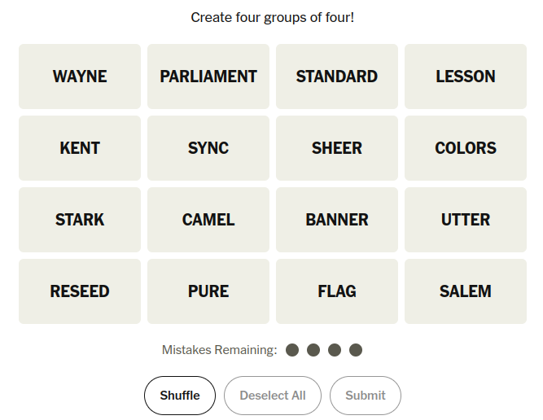

Returning to FUnctions
Fred Agbo
September 28, 2026
Happy New Week 6!
- Class grouping today: Scan the QR code or go to https://tools.jedrembold.prof/daily
- Class code is
bR9Zoo - Introduce yourselves! What is your favorite Python function?

Quick Announcements
- Project Wordle is due today at 10 pm.
- Problem set 3 grading is ongoing
- No project or problem set this week. Only prep for the midterm exam
- Section meeting this week will be dedicated to midterm exam prep
Heads up About Midterm Exam
- Remember the 1st midterm exam is this Friday in this hall
- The exam will be on Canvas and will be timed, exactly 1 hour (class
time)
- Those with accommodations will have their approved additional time added up.
- The exam is partially OPENED; you will have access to course
materials BUT:
- You CANNOT have your code editor opened.
- You CANNOT Google, use any AI, LLM, or search tools
- Practice question 1 was posted. My version of solution will be out today
- One more practice question will be posted this evening followed with
my version of its solution on Wednesday.
- I hope the practice questions helps
Heads up About Midterm Exam: Testing
- Because you are allowed to access a wide variety of digital
materials on the exam, which is good,
- it is difficult for me to verify the integrity of the exam, which is less good
- Thus, I’ll try out a virtual proctor tool design by Jed, which takes periodic snapshots of your screen during an exam
- We will test this and other practical things on Wednesday during class
Recall the Recreating Connections Problem:
- Suppose we want to recreate the starting layout of the NYT’s Connections game
- The puzzle for today looks like the image to the right

A Walkthrough Code
- Sample solution!!!
from pgl import GWindow, GRect, GLabel
"""
Algorithm:
Make a bunch of box with text in them
Assign each box a location, and add it
"""
def make_and_place_box(word, x, y):
"""Make a box with the desired word centered in it
Algorithm:
Make a box of the desired dimensions
Make a label with the text
Center that label in the box
Add everything to the window
"""
box = GRect(x, y, BOX_WIDTH, BOX_HEIGHT)
label = GLabel(word.upper())
label.set_font("bold 20pt sans-serif")
new_x = x + BOX_WIDTH / 2 - label.get_width() / 2
new_y = y + BOX_HEIGHT / 2 + label.get_ascent() / 2
gw.add(box)
gw.add(label, new_x, new_y)
BOX_WIDTH = 200
BOX_HEIGHT = 100
BOX_SEP = 10
WIDTH = 4 * (BOX_WIDTH + BOX_SEP)
HEIGHT = 4 * (BOX_HEIGHT + BOX_SEP)
gw = GWindow(WIDTH, HEIGHT)
# Row 1
make_and_place_box('wayne',
BOX_SEP / 2,
BOX_SEP / 2)
make_and_place_box('parliament',
BOX_SEP / 2 + (BOX_WIDTH + BOX_SEP),
BOX_SEP / 2)
make_and_place_box('standard',
BOX_SEP / 2 + 2 * (BOX_WIDTH + BOX_SEP),
BOX_SEP / 2)
make_and_place_box('lesson',
BOX_SEP / 2 + 3 * (BOX_WIDTH + BOX_SEP),
BOX_SEP / 2)
# Row 2
make_and_place_box('kent',
BOX_SEP / 2,
BOX_SEP / 2 + (BOX_HEIGHT + BOX_SEP))
make_and_place_box('sync',
BOX_SEP / 2 + (BOX_WIDTH + BOX_SEP),
BOX_SEP / 2 + (BOX_HEIGHT + BOX_SEP))
make_and_place_box('sheer',
BOX_SEP / 2 + 2 * (BOX_WIDTH + BOX_SEP),
BOX_SEP / 2 + (BOX_HEIGHT + BOX_SEP))
make_and_place_box('colors',
BOX_SEP / 2 + 3 * (BOX_WIDTH + BOX_SEP),
BOX_SEP / 2 + (BOX_HEIGHT + BOX_SEP))
# Row 3
make_and_place_box('stark',
BOX_SEP / 2,
BOX_SEP / 2 + 2 * (BOX_HEIGHT + BOX_SEP))
make_and_place_box('camel',
BOX_SEP / 2 + 1 * (BOX_WIDTH + BOX_SEP),
BOX_SEP / 2 + 2 * (BOX_HEIGHT + BOX_SEP))
make_and_place_box('banner',
BOX_SEP / 2 + 2 * (BOX_WIDTH + BOX_SEP),
BOX_SEP / 2 + 2 * (BOX_HEIGHT + BOX_SEP))
make_and_place_box('utter',
BOX_SEP / 2 + 3 * (BOX_WIDTH + BOX_SEP),
BOX_SEP / 2 + 2 * (BOX_HEIGHT + BOX_SEP))
# Row 4
make_and_place_box('reseed',
BOX_SEP / 2,
BOX_SEP / 2 + 3 * (BOX_HEIGHT + BOX_SEP))
make_and_place_box('pure',
BOX_SEP / 2 + 1 * (BOX_WIDTH + BOX_SEP),
BOX_SEP / 2 + 3 * (BOX_HEIGHT + BOX_SEP))
make_and_place_box('flag',
BOX_SEP / 2 + 2 * (BOX_WIDTH + BOX_SEP),
BOX_SEP / 2 + 3 * (BOX_HEIGHT + BOX_SEP))
make_and_place_box('salem',
BOX_SEP / 2 + 3 * (BOX_WIDTH + BOX_SEP),
BOX_SEP / 2 + 3 * (BOX_HEIGHT + BOX_SEP))Group Problems
- Download the starter codes from the Discord
Problem 1: Predicate Refactoring
Prob1.pyin today’s contents contains four different poorly constructed predicate functions- Your task is to clean them up!
- Add docstrings as necessary
- Reduce each function to a 1-liner (2 with the function header) using boolean operations
- The literals
TrueandFalseshould not show up in the function anywhere
Problem 2: Sandwich Making
Prob2.pycontains a basic function definition to create and print a sandwich to the screen- At the bottom you can specify the arguments to craft a particular
sandwich. Enter arguments to create a:
- Non-toasted turkey sandwich on sourdough with mustard and swiss. Cut in two.
Problem 2: Sandwich Defaults
- You may have made a mistake entering in the ingredients, or just lamented how much you had to type
- Let’s provide some good defaults.
- Decide with your group what a reasonable default would be for each
of the initial parameters, and adjust the
make_sandwichfunction header to create those defaults
Problem 2: More Sandwiches
- Create and print the following sandwiches, typing as little into the
function call as possible (use your defaults where you can!)
- A beef sandwich on white bread with swiss cheese and mustard. Toasted and cut.
- A bologna sandwich on rye with cheddar cheese and mustard. Untoasted and uncut.
- A ham sandwich on white bread with cheddar cheese and mayo. Untoasted and cut.
Problem 3: Utility Functions
- Write one function that could become part of a PGL utility library
- It should create a GObject, position it, customize it, and return it
- Should include many parameters (with sane defaults) to customize, detailed on next slide
Problem 3: Parameters to Include
- If a GRect or GOval, should be able to customize:
- Center position
- Dimensions
- Coloring
- If filled
- If a black border should be visible
- If a GLabel, should be able to customize:
- Center position
- Text
- Font
- Coloring
- If text should be converted to uppercase